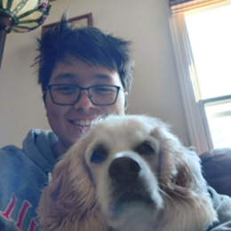

Our EBoard#
Meet the awesome members of our EBoard!
President#
Name: Spencer Marci (He/Him)
Fun Fact: I carry a Rubik’s cube at all times.
Bio: Hello. I helped co-found FROST in the ‘21. I went to my first NHRL event in July ‘21 with a few friends. Before the day was over, we were planning our first design. Since then I’ve helped build 5 or 6 different battle bots (I’ve lost track, honestly) and participated in a few more NHRL events. As the club president, I help manage the club and support newer builders with their own designs.
Contact:
Email: spencer.marci@uconn.edu
Discord: KronosTheTitian#0456
Vice President#

Name: Louis Spencer (He/Him)
Fun Fact: I am VP of IEEE and if you are interested in learning more about computers, electronics, and microcontrollers, you can DM me and come check it out!
Bio: What’s up fam squad? I joined FROST in my sophomore year after lurking in their Discord server for a year. After sleeping through and then later attending NHRL, I was invested in the club and eventually became vice president. I will try hard to keep the club up and running. Be sure to follow our social media accounts!
Contact:
Email: louis.spencer@uconn.edu
Discord: octorock_eater_99
Treasurer#
Name: Alison Powell (She/They)
Fun Fact: I started a recycling initiative at NHRL and I love being a force of chaos.
Bio: Howdy! I joined FROST at the beginning of my freshman year. I was really interested in learning more about robotics and technology because I didn’t know much of anything before. I loved everyone in the club and now I’m even the Treasurer!
Contact:
Email: alison.powell@uconn.edu
Discord: Ladybug#4128
Secretary#
Name: Elijah Spooner (He/Him)
Fun Fact: I programmed a game from scratch using python in junior year High School
Bio: I programmed a game from scratch using python in junior year High School
Contact:
Email: elijah.spooner@uconn.edu
Discord: elijahspooner